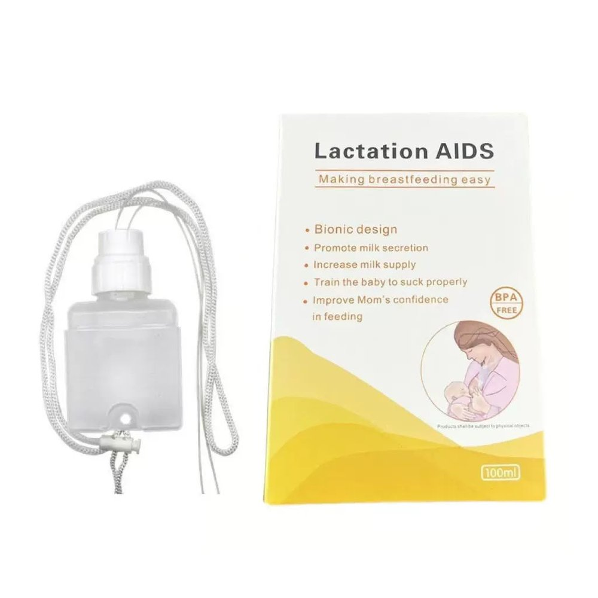

Кормление
Система докорма у груди (Lactation Aid)
744 сом
Предназначена для мам, у которых временно недостаточно грудного молока или требуется дополнительная стимуляция лактации.
- Помогает увеличить выработку грудного молока за счёт активного сосания груди малышом.
- Позволяет докармливать ребёнка сцеженным грудным молоком или смесью без использования бутылочки.
- Способствует сохранению грудного вскармливания.
- Помогает малышу правильно захватывать грудь и развивать навык сосания.
- Изготовлена из безопасных материалов, не содержит BPA.
- Обьем контейнера - 100мл
Наличие подтвердит менеджер